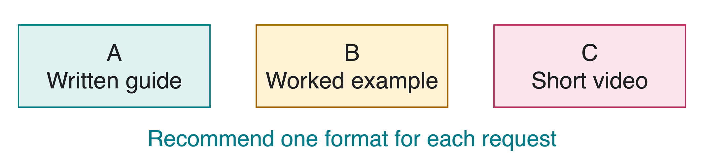
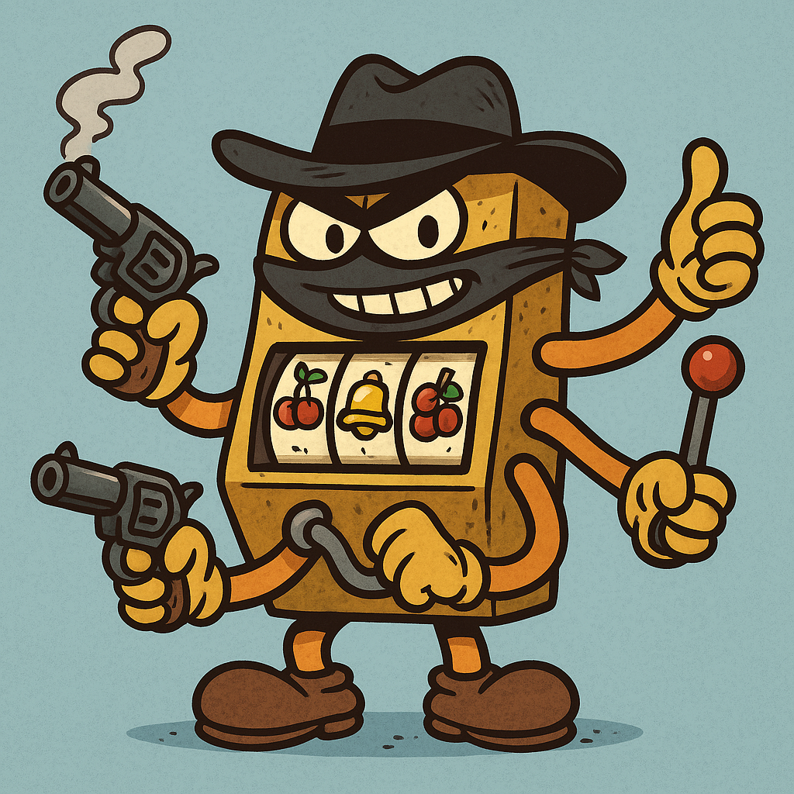
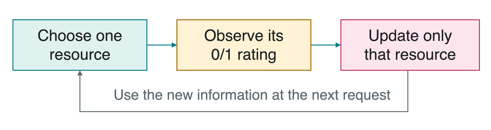
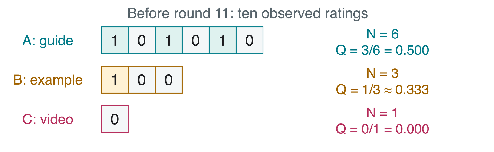
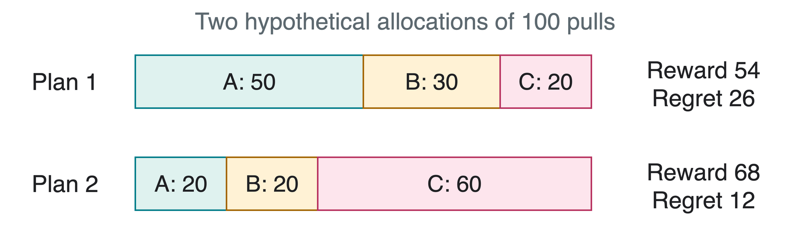
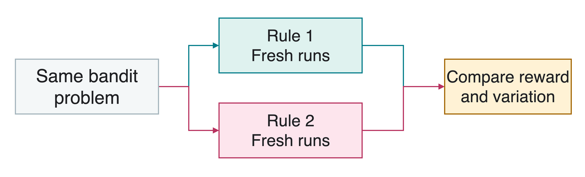

A multi-armed bandit (MAB) problem repeatedly chooses among options with unknown rewards. Each option is an arm, and choosing it is a pull.

For each request, recommend one resource. Reward is 1 if the student rates it useful, and 0 otherwise.
The highest rating average so far may belong to the best resource, or simply to the one that got lucky early.
Why the Name “Bandit”?

A lever-operated slot machine is nicknamed a one-armed bandit: its lever is the arm, and its uncertain payouts can take the player’s money.
The mathematical problem offers several unknown reward options.
In our example:
Arm: a resource format.
Pull: recommend that format.
Reward: its usefulness rating.
Feedback and the Basic Assumptions
At round t, choose arm A_t and observe reward R_tonly for that arm.

Stochastic means the reward is random. Our 0-or-1 reward is a Bernoulli reward.
Stationary means each arm’s reward distribution stays fixed. Assume independent requests from the same population and immediate feedback.
The horizonT is the number of rounds. The goal is high expected total reward over those T choices.
Counts, Estimates, and Unknown Means
Before round t, N_t(a) counts earlier pulls of arm a. Its sample meanQ_t(a) averages the rewards observed for that arm:
Q_t(a)=\frac{\text{total observed reward from }a}{N_t(a)},\qquad N_t(a)>0.

The true mean\mu_a is the arm’s unknown average reward, here its probability of a useful rating. An observed Q_t(a) can differ from \mu_a.
Exploitation and Exploration
Exploitation uses current estimates to choose a high-reward arm. A greedy rule always chooses an arm with the largest Q_t(a), breaking ties randomly.
Arm before round 11
Pulls
Estimated mean
A: guide
6
0.500
B: worked example
3
0.333
C: video
1
0
Greedy chooses A. But the single failure for C leaves little evidence about its true mean.
Exploration tries options to gain information. It may cost reward now while helping later choices. A zero observation does not establish a zero reward probability.
Epsilon-Greedy
Epsilon-greedy uses a random-choice branch with probability \epsilon, where 0\leq\epsilon\leq1. Otherwise it exploits the current estimates Q.
functionEpsilonGreedy(Q, epsilon)
with probabilityepsilon
returnUniformChoice(allArms) // explore
otherwise
returnBestArm(Q) // exploit
UniformChoice makes every arm equally likely, including the current best. BestArm chooses the largest estimate and breaks ties uniformly at random.
A larger \epsilon gathers more random experience, but also spends more choices on options with lower current estimates.
Actual Selection Probabilities
Return to the record where A is the unique highest estimate. With three arms and \epsilon=0.15, each arm gets 0.15/3=0.05 probability from exploration.
Here T is the number of rounds, and \mathbb E averages over random rewards and action choices.
A pull of arm a loses \mu^*-\mu_a expected reward relative to the benchmark.
A learner pays for poor choices along the way, even if it identifies the best arm at the end.
The true means are usually unknown to the learner. A simulator can reveal them to an evaluator without giving them to the algorithm.
Two Different Learning Costs
For evaluation, suppose hidden true means are (\mu_A,\mu_B,\mu_C)=(0.4,0.6,0.8). Always choosing C would give 100\cdot0.8=80 expected reward over 100 rounds.

For the first allocation: 50\cdot0.4+30\cdot0.6+20\cdot0.8=54, so expected regret is 80-54=26.
Both allocations might finish by recommending C, yet they missed different amounts of reward along the way.
Comparing Bandit Algorithms
Use the same arm distributions and horizon T for every algorithm.

Independent runs restart learning with fresh random outcomes.
Compare cumulative reward or regret and the variation across runs.
Keep the true means available only to the evaluator.
Compare performance across runs, not one lucky run or only the final recommendation.
When the Basic Model Is Too Simple
New term
Meaning
Resource example
Nonstationary bandit
Reward distributions change over time.
A video becomes outdated after a library update.
Contextual bandit
Observe features before choosing, then learn which actions work for that context.
Beginners and experienced students may prefer different formats.
Changing rewards can require more emphasis on recent feedback. Context-dependent choices can require separate predictions for different requests.
If a recommendation changes a student’s future knowledge and rewards, a one-step bandit omits that sequential effect. Full reinforcement learning (RL) can model action-dependent future states.
Quick Check
Four arms, \epsilon=0.2, and one unique greedy arm: what is its selection probability?
Does one zero reward prove that an arm’s true mean is zero?
Is a UCB score of 1.4 invalid because reward is only 0 or 1?
1. 0.85. Exploitation gives 0.8, and exploration adds 0.2/4=0.05.
2. No. One observation is evidence about a distribution, not its true mean.
3. No. UCB compares estimate-plus-bonus scores. Those scores need not lie in [0,1].
Takeaways
An arm is a choice, and a pull reveals only that choice’s reward.
Sample averages estimate unknown reward means.
Exploitation uses current estimates. Exploration gathers more evidence.
Epsilon-greedy explores uniformly with probability \epsilon.
UCB adds a bonus that reflects limited sampling.
Regret includes the reward missed throughout learning.